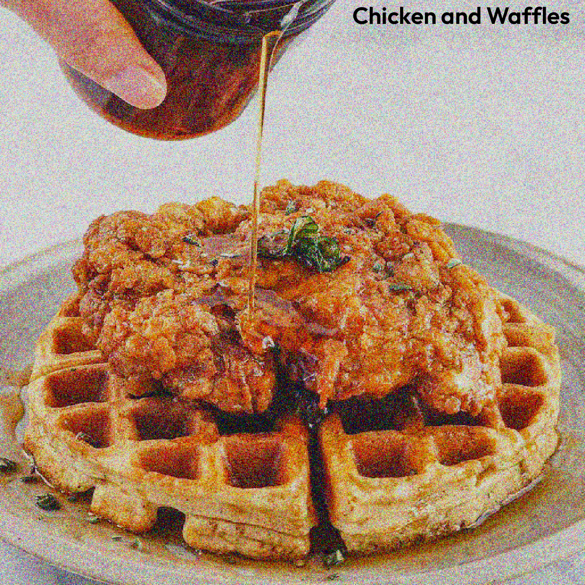
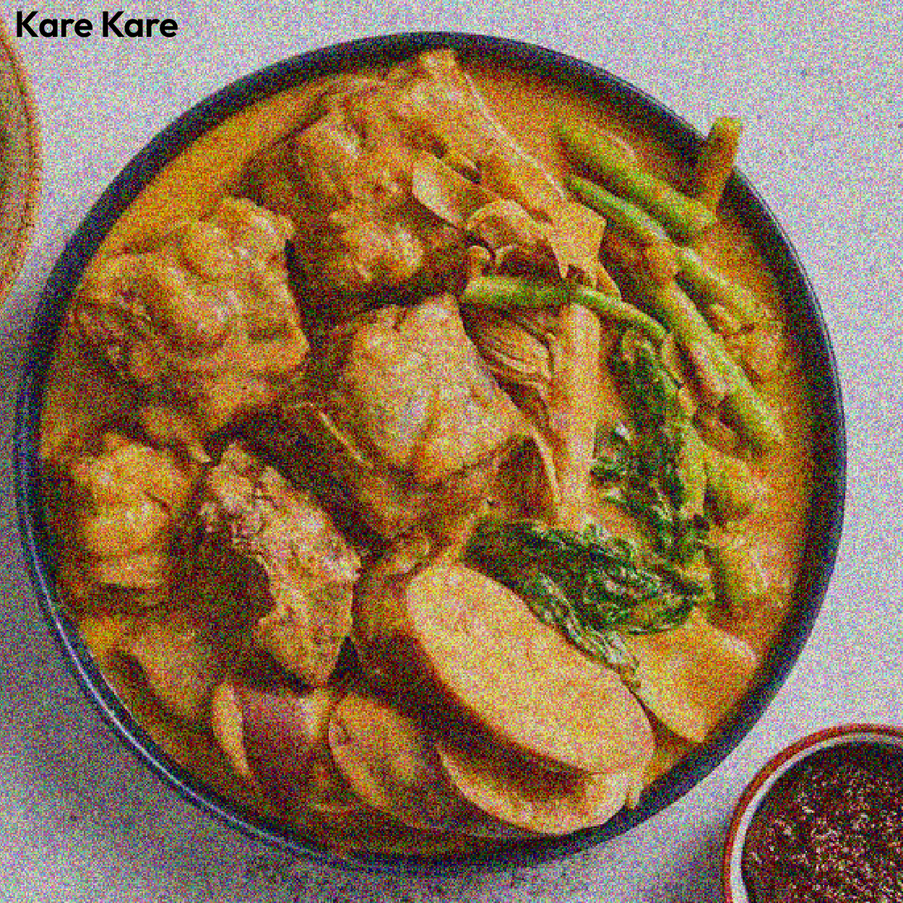
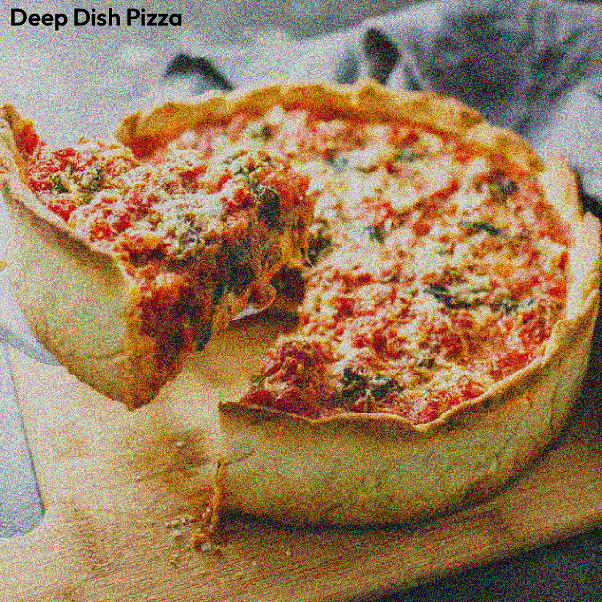
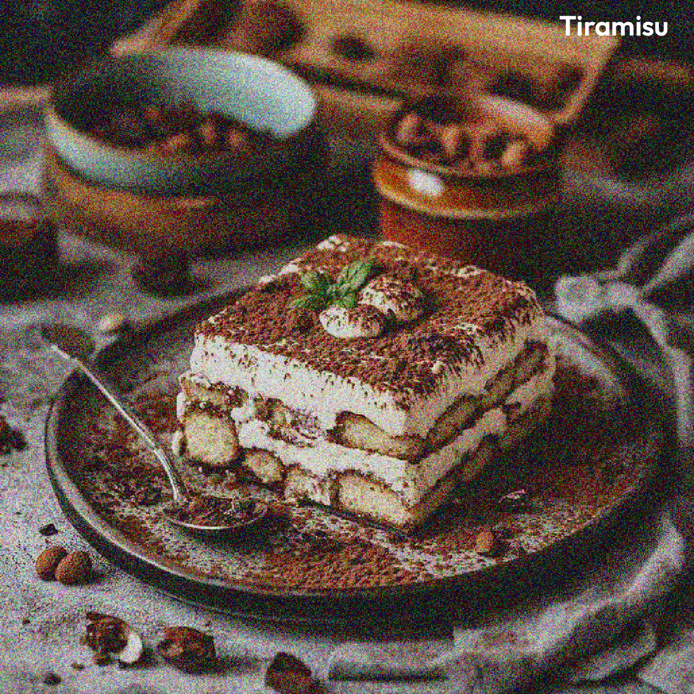

My Top 5's
- Chicken and Waffles
- Kare Kare
- Garlic Rice
- French Toast
- Birria Tacos
These are my favorite foods that I really liked eating, and since
eating them, I have each different interactions and experiences eating them!
Chicken and waffles are one of my favorite foods to eat due to the
combination of sweet and savory, Kare Kare is a Filipino dish that I eat
everytime I'm sick, especially with garlic rice. When it's breakfast I
usually eat the french toast because it's really sweet and it reminds
me of a very big pancake, but in bread form. Lastly the birria tacos are
essentially one of my favorite tacos to eat when I'm in LA, and having it at
taco trucks is the way to do it!
Five Foods I Want To Try!
- Poutin
- Falafel
- Deep Dish Pizza
- Tiramisu
- Lobster
These are the foods that I have always wanted to try due to either foods that
I haven't gotten to try, or the distance to get those foods are hard, or even
the price range could be stiff for me at the time, but I still want to try
these foods in the near future or even tomorrow. Poutin and Falafels are the first
ones because of the flavor content that I like. The deep dish pizza because of
the different kinds of it in the east coast. Tiramisu I would as a breakfast treat
with coffee, and lastly lobster because sometimes it would be too expensive and
when I do have time to try it, it would be something that I wouldn't mind spending.



